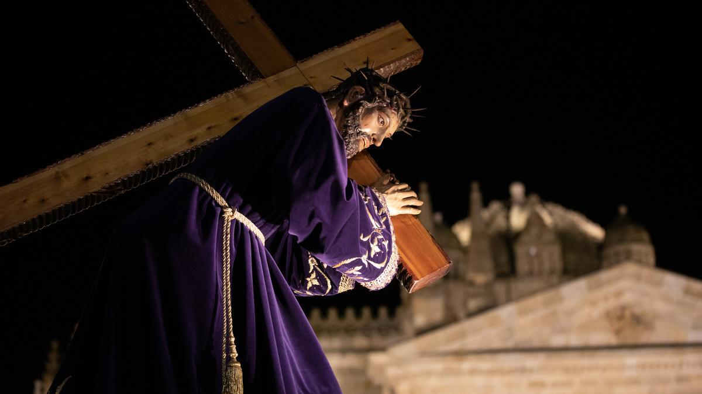
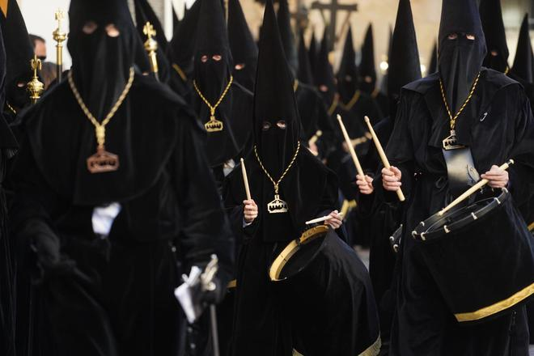
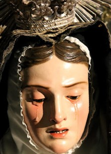

Cofradías de Zamora
Cofradía Jesús Nazareno
Fundación
1651
Pasos
11 grupos escultóricos
Hermanos
7500
Hermanas
4500
Túnica
Laval Negro

Ubicación
Zamora, Castilla y León, España
Video de la Procesión
Real Cofradía del Santo Entierro
Fundación
1593
Pasos
11 grupos escultóricos
Hermanos
3400
Túnica
Túnica y Caperuzo Negros de terciopelo

Ubicación
Zamora, Castilla y León, España
Video de la Procesión
Real Cofradía de Nuestra Madre de las Angustias
Fundación
1412
Pasos
3 grupos escultóricos
Hermanos
5010
Túnica
Túnica Blanca y caperuz negro

Ubicación
Zamora, Castilla y León, España